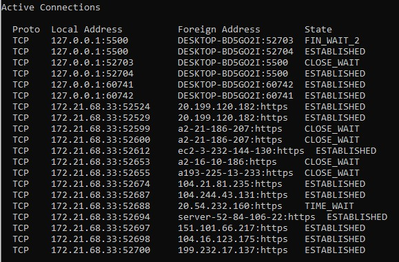

4.1
A) Hálózat azonosító: 172.21.68.33
B) Csomópontazonosító: 172.21.68.255
C) Az IP cím osztálya: B
D) A címhez kapcsolt netmaszk /prefix és pontozott decimális formában:
Netmasz: 255.255.255.0
Prefix: 2001:0DB8:85A3::8A2E:0370:7334/64
Pontozott decimaális forma: FE80::5CFA:F6BB:BEFC:2BAC
4.2
A) A hálózatban kapott ip címek:

B) az IP címet a netsh interface ipv4 set address name="interfész neve" static új_ipcím paranccsal lehet megváltozatni
4.3
A) Az első gép fizikai címe: 3C-A0-67-0A-FD-27
B) Ehez a fizikai címhez renden gyártó neve: Liteon Technology Corporation
C) Kapcsolat bontás után törlödik a cache, ujracsatlakozva betöltenek az entryk
D) Új sort az: arp /s inetaddr etheraddr ifaceaddr paranccsal adunk meg
E) Törölni egy bejegyzész az: arp /d inetaddr ifaceaddr
4.4
A)
| |
Forrás |
Cél |
| IP |
172.21.71.56 |
172.21.71.1 |
| MAC |
c8:09:a8:e2:32:36 |
08-6a-c5-51-6c-7e |
| IP |
172.21.71.1 |
172.21.71.62 |
| MAC |
00:16:c8:96:ce:bf |
28-11-a8-3d-29-8f |
| IP |
172.21.71.20 |
172.21.71.1 |
| MAC |
32:51:b3:3c:29:48 |
a0-a8-cd-4c-ee-b0 |
B) A fizikai cím és az IP cím szerepe a hálózati kommunikációban
Fizikai cím szerepe
Minden hálózati eszköz rendelkezik egy egyedi hálózati azonosítóval, ez az úgynevezett MAC (Media Access Control) cím. A MAC címet hálózati kártyák esetében gyakran a kártyán is megtaláljuk egy címkén, de könnyedén lekérhető parancssorból(Windows: ipconfig,Linux: ifconfig).
A mai napig használatos a hálózati forgalom szűrésére a MAC címek szűrése.
IP cím szerepe:
Az IP-cím egy egyedi cím, amely egy eszközt azonosít az interneten vagy a helyi hálózaton. Az IP az „Internet Protocol” rövidítése, amely az interneten vagy a helyi hálózaton keresztül küldött adatok formátumát szabályozó szabályok összessége.